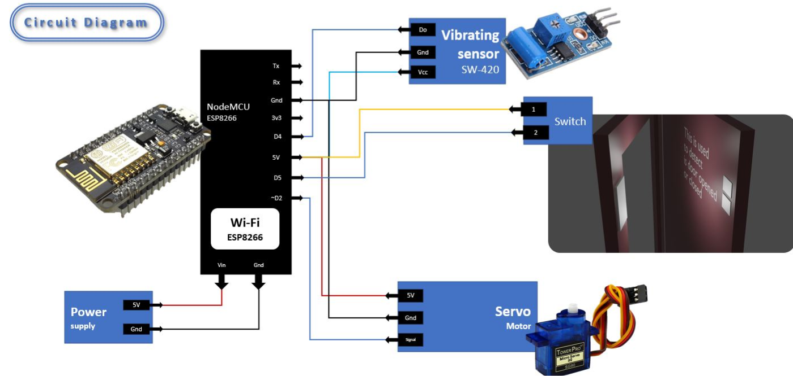
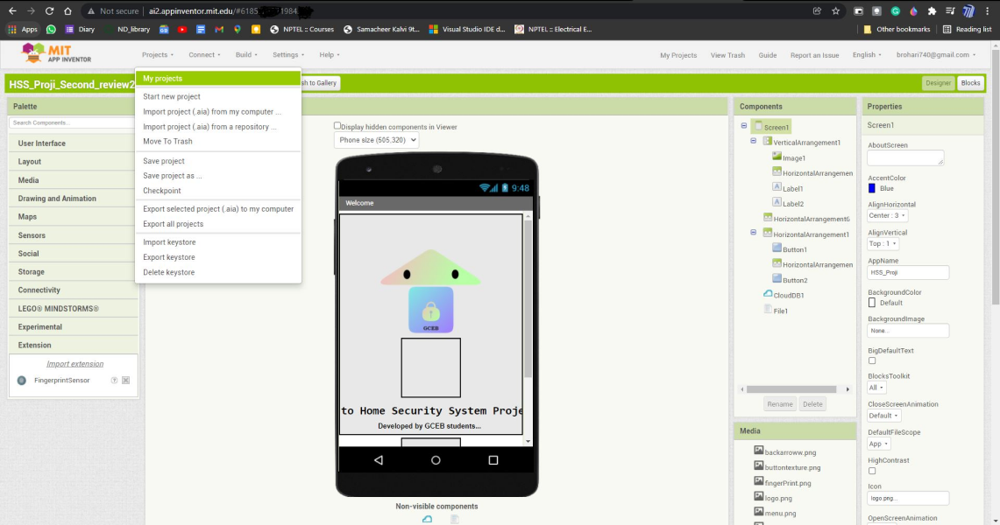

Requirements
| Components | Uses |
|---|---|
| ✔ ESP8266 Microcontroller(NodeMCU) + Wi-Fi Module | It is a microcontroller (decision maker in project) and it has WIFI to connect to internet |
| ✔ Switch | To get status of the door |
| ✔ Servo motor | To open the door lock |
| ✔ Door lock | To lock the door |
| ✔ Vibrating Sensor SW-420 | To get the vibration status occurring at the door |
| ✔ ThingSpeak.com | To make the connect between the project with app over the internet |
| ✔ MIT App Inventor | To create the app |
| ✔ Power Source | To power the project |
| ✔ Android Phone | To use the app |
Explanation
Here you can see in figure is a block diagram that NodeMCU is connected to Vibration sensor, Wi-Fi module, Servo motor, Switch and power source. For first time use, user need to register and create password for their product with the unique reference ID allotted to that product. The created password and reference ID will get stored on CloudDB. To open the door, user should turn on the data transfer and click scan button on the app that we created using the MIT app inventor and they need to scan their fingerprint. If the fingerprint is matched it will send the Open() signal along with the reference id to NodeMCU. Then the Arduino checks if the Reference Id matches or not. If it matches then it will open the door lock using the servo motor. Then it wait for if the button is become '0' if it became '0' NodeMCU send door_opened() function to app, then the app will save that information with time in CloudDB. If button become '1' NodeMCU send door_closed() signal to app this also will get saved in cloudDB. We can get this info later whenever we want. Mean While if the strong vibration is produced in the door. NodeMCU decide it as someone destroying the door and send Alert() to the app.

Hardware configuration
- We gona use Arduino IDE to Program the NodeMCU. To install and Configure the Arduino IDE for NodeMCU, follow the instruction provided in this Page , Highly recomended you to read the complete document and try to make simple blink led project using nodemcu.
- Then open the Arduino IDE and create the New File by File -> New
- Enter the below Code. you can also view the code on github
Here we use the Arduino IDE to program the NodeMCU microcontroller. The library used in code are listed below.
#include<ThingSpeak.h>
#include<ESP8266WiFi.h>
#include<ESP8266WebServer.h>
#include<Servo.h>
ThingSpeak.h Library is used to link the nodeMCU to the Thingspeak server. ESP8266WiFi.h is the WiFi library which used to connect the nodeMCU to the internet via the local Hotspot. For to connect to internet we should mention the SSID and Password in our code. Servo.h Library is used to control the servo motor to open and close the door lock.
Then we Define the D2 for Door lock, D4 for Vibration, D5 for Door Open Close status in the code.
Serial.begin(115200); is used to display the result in Serial Monitor to debug the pogram in the bandrate of 115200.
Then using pinMode(pin,INPUT/OUTPUT) is used to define whether the pin is input or output. We define D4 and D5 pin as the INPUT.
WiFi.begin(ssid, password); beigns the wifi connect with the ssid mentioned in the code. ThingSpeak.begin(client); begins the connection to the thighspeak via the wifi client.
ThingSpeak.readLongField(channel name, field number, read api key); is used to get the command updated on thingspeak by the app.
The function checkrefid(string); checks the command and the REFID. IF it matches only it will Proceed for the further action.
If the command get from the Thingspeak first field is “REFID+09” it will open the door lock. If the command get is “REFID+21” nodeMCU will close the door lock.
drservo.write(90); rotates the servo motor to 90degree, lock knob is attached to servo motor as shown in the figure 3.4, so the lock will get opened. similarly drservo.write(0); will close the door lock by rotating the servo motor.
Vibbbb() function check checks for the vibration. If the vibration is measured as more than 10,000 it writes 555 on the thingspeak field 3, in app it will show as “No vibration detected”. Suppose if the vibration is measured in between 10,000 and 20,000 it writes 666 on the thingspeak field 3, in app it will show as “Medium vibration detected”. If the vibration is measured as more than 30,000 it writes 666 on the thingspeak field 3, in app it will shown as “High vibration detected”
ThingSpeak.writeField(channel number, filed number, value, write api key); is used to enter the value in the particular field.
Then it check the digital pin D5 which is where the switch like mechanism attached to door as shown in figure 3.2 is connected. If D5 is HIGH it will write the 936 on the thingspeak in field 2, in app it is shown as “door closed”. If D5 is LOW it will write the 110 on the thingspeak in field 2, in app it is shown as “door opened”. digitalRead(D5); is used to read the voltage at D5. The above process will get looping till the power is supplied to the NodeMCU.
- Now you need to install the library
ThingSpeak.h, ESP8266WIFI.h., ESP8266WebServer.h, Servo.h - You can install this libraries from Tools->Manage Libraries
- Then click tick (✔) symbol to compile the program
- Then upload the program to the NodeMCU by clicking the upload icon (→).
- Now connect circuit as shown in the Circuit Diagram.
Circuit Diagram
Here you can see in figure is the circuit diagram used for our Home Security project. Here NodeMCU is the common component which connected to the all-other components. The circuit diagram is quite simple. Here we use the 3digital pin D2, D4andD5. D2 digital pin is connected to servo motor to open the door lock. Digital pin D5 is connected to Switch like mechanism attached to the door as shown in the image, to keep track the status of the door. Using this microcontroller knows whether the door is opened or closed. It will Be 1 if the door is closed and it will be 0 If the door is opened. Digital pin D4 is connected to the Vibration sensor Sw-420 as shown in the image. From which the vibration occurred at the door will be detected. 5v and ground from the Nodemcu are connected to the vibration sensor and servomotor as shown in the figure. 5v is connected to the switch as shown in the figure
App developmet in MIT app inventor
Setting up Thingspeak.com
- Before dive into the thingspeak, visit this blog and try to do this simple project in this article to get familiare with the thingspeak.
- First Register and Login to the Thingspeak.com
- Then create the new channels with 3 field as shown in the image
- Then in the arduino program change the channel number, write api key, read api key to the thigspeak generated values
- Also Change the SSID, Password to your respective local wifi SSID and Password
- You can see the values updated by the nodemcu in the private/public view.